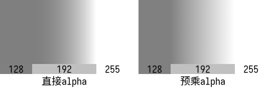
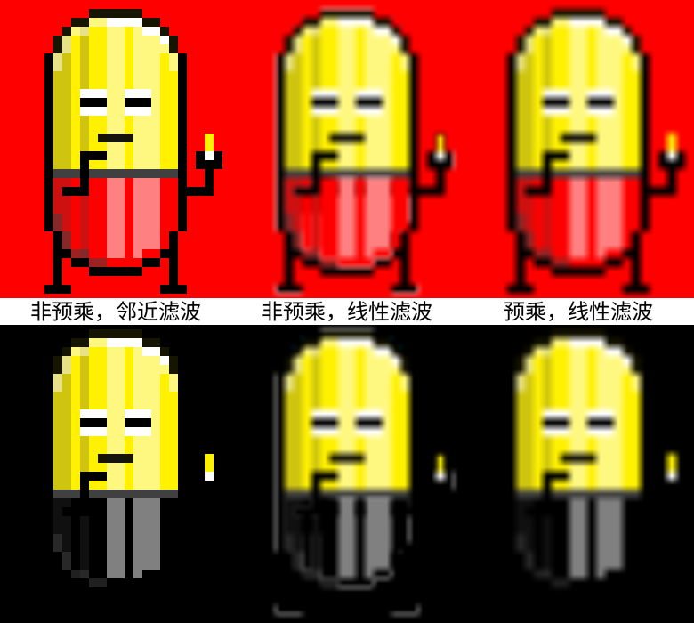

Ch8-4 预乘Alpha
你是否曾看到过这样的图像，3D场景中，薄片状物体的边缘显得很不自然：

-
图片出处，能流畅阅读英文的话看链接里这篇文章即可理解预乘alpha的意义。
采样带透明度的图像时，若没有使用预乘alpha的图像，线型滤波的结果便会呈现出上面这般模样。
先前在Ch1-4 创建交换链中已经简单说明过了什么是预乘透明度，此概念即为预乘alpha。
这里再次简要说明下什么是预乘alpha：
-
直接alpha（straight alpha）：RGB通道代表原始的红蓝绿色值，与A通道（A即代表alpha）相互独立。
-
预乘alpha（premultiplied alpha）：RGB通道的数值为原始的红蓝绿色值与A通道值的乘积（这意味着当你需要修改A通道的数值时，RGB通道的数值应被一并放缩）。
考虑到Ch1-4是入门篇章，将“premultiplied alpha”译作“预乘透明度”比较易懂，网络上通常也是这么翻译的。
这个翻译并不能算准确，有两个原因：A通道值未必是用作不透明度。
混色与线性插值
要理解预乘alpha的作用，得先从混色讲起。
通常会将A通道的值用作不透明度：若一个片段的不透明度为a（a为一个比值），在混色时，应有a的颜色来自该片段本身，(1 - a)的颜色来自其背景。
如果你不采样带透明像素的贴图（或采样这类贴图但不发生放缩），仅仅是片段着色器可能输出半透明的颜色，且输出的色值采用直接alpha，那么正确处理透明度的混色方式如下：
VkPipelineColorBlendAttachmentState{ .blendEnable = VK_TRUE, .srcColorBlendFactor = VK_BLEND_FACTOR_SRC_ALPHA, .dstColorBlendFactor = VK_BLEND_FACTOR_ONE_MINUS_SRC_ALPHA, .colorBlendOp = VK_BLEND_OP_ADD, .srcAlphaBlendFactor = VK_BLEND_FACTOR_ONE, .dstAlphaBlendFactor = VK_BLEND_FACTOR_ONE_MINUS_SRC_ALPHA, .alphaBlendOp = VK_BLEND_OP_ADD, .colorWriteMask = 0b1111 };
-
这些枚举项的解释见VkPipelineColorBlendStateCreateInfo。
将混色结果标记为result，则（加斜字体对应混色因子枚举项）：
result.rgb = src.rgb * src.a + dst.rgb * (1 - src.a)
result.a = src.a * 1 + dst.a * (1 - src.a)
注意到dst.rgb没有乘dst.a，这是因为按这种方法混色的话，混色结果是预乘alpha的，而dst是已经在颜色附件中的色值，如果先前使用的是同样的混色方式，那么dst.rgb当然已经预乘了A通道值。
然而，这种混色方式在放缩带透明度的贴图（尤其是放大），且应用线性滤波时会造成不自然的颜色过渡：
-
上图中，线型滤波的结果图像，如果从128到255是线性地过渡的，中线上的灰度理应是191或192。
但比对底下用做参考的灰度为192的色块，显然192出现在了结果图像的中线右方，而中线上的数值是159。
这是为什么呢？试着计算中线上src的数值：vec4(0, 0, 0, 0.5) * 0.5 + vec4(1, 1, 1, 1) * 0.5，结果是{ 0.5, 0.5, 0.5, 0.75 }。
结果无所谓啦，关键在于将RGBA各通道线性插值后，再将RGB通道乘以A通道，这是在将两个线性变化的量相乘。
线性变化即按一次函数变化，两个一次函数的乘积是二次函数，并非线性函数。因而上图渲染结果的渐变部分，靠近128的一侧的变化较为平缓，而靠近255一侧则较为剧烈。
解决办法就是在采样贴图前，将贴图的RGB通道变为预乘alpha，即将“RGB通道乘以A通道”这一步放到线性插值前。
则混色方式得相应地变为：
VkPipelineColorBlendAttachmentState{ .blendEnable = VK_TRUE, .srcColorBlendFactor = VK_BLEND_FACTOR_ONE, //改动 .dstColorBlendFactor = VK_BLEND_FACTOR_ONE_MINUS_SRC_ALPHA, .colorBlendOp = VK_BLEND_OP_ADD, .srcAlphaBlendFactor = VK_BLEND_FACTOR_ONE, .dstAlphaBlendFactor = VK_BLEND_FACTOR_ONE_MINUS_SRC_ALPHA, .alphaBlendOp = VK_BLEND_OP_ADD, .colorWriteMask = 0b1111 };
比较直接alpha与预乘alpha图像的渲染结果：
-
使用预乘alpha的RGB通道值后，虽然线型滤波的结果在数值上确实是线性变化的，但显示出的渐变效果在视觉上可能仍显得不够柔和，将色值映射到sRGB色彩空间可以获得更好的效果，见Ch8-5 sRGB色彩空间与开启HDR。
对于颜色的线性插值，除去应使用预乘alpha的贴图外，还有以下注意事项：
-
若有色值被插值后输入到片段着色器，则片段着色器前的着色器阶段应当输出预乘alpha的色值。
-
注意色彩空间：插值之前，应确保色值是线性色彩空间中的色值（相关概念会在下一节中进行讲解）。
创建预乘alpha的贴图
虽然渲染中有使用预乘alpha贴图的必要性，但通常你接触到的图像文件会是直接alpha的。
你从网上下到的PNG通常都会是直接alpha的，PNG标准中规定其图像数值应是直接alpha的形式：
The colour values in a pixel are not premultiplied by the alpha value assigned to the pixel.
虽然图像查看器/图像处理软件在渲染图像时可能会做预乘alpha的处理，但图像处理软件保存的图片通常会是直接alpha的。
这是因为预乘alpha的图像不适合被用于编辑：考虑到图像的存储精度，让RGB通道乘以A通道值，会造成不可逆的精度损失。
例如：每通道8位的图像，直接alpha的R值为1/255，A值只要在[0, 127/255]之间，预乘后的R值便会舍入为0，将0除以A值无法还原到1/255。
综上，既是如此，有必要实现从直接alpha贴图创建预乘alpha贴图的功能。
值得注意的一点是，即便一张图中只有完全透明的像素（A通道值为0）及完全不透明的像素（A通道值为1），可能也需要让RGB通道预乘A通道值。
如果这些完全透明像素的RGB通道都是0，那么显然是否预乘没有任何差别。
然而，用stb_image读取PNG这类压缩格式得到的图像数据，完全透明像素的RGB通道可能不为0，应当将它们预乘为0。
（解决这个问题的方法之一当然是换一个图像读取库，不过我没有费事去尝试别的库，没什么可推荐的）
下图中以三种不同的方式渲染了一个...呃，手上拿着一颗胶囊的胶囊小人（画得很烂，请不要在意），它的头是黄色，透明的下半身透出底色，在此基础上加了半透明的高光和阴影：
-
原图被渲染到20倍大小，可以看到，非预乘透明度的情况下，在不透明/半透明与全透明的边界上，呈现出了诡异的灰边——有些地方在高亮度背景上显暗，有些地方低亮度背景上发白，这正是全透明像素的RGB通道非0导致的结果。
概念和注意事项到此为止便讲完了，后续是解说具体的代码。
如果你觉得自己至今为止学得还不错，可以基于所学自行实现相应功能，然后再来对答案。
怎么实现？
没必要每次都在运行期创建预乘alpha的贴图，可以预渲染完然后存盘。如果你只是单纯地想实现这一目的的话，最省事的方法当然是直接用C++代码在CPU侧处理stb_image读到的数据，因为不必考虑运行期的效率，都不需要用上Vulkan。
不过这样的话这一节的内容也就没必要往下写了。
考虑用Vulkan做这件事情，需要采样贴图吗？
既然我特地将（大部分教程中会早早地就讲到的）混色拖到这一节才讲，自然是有些原因啦：
将已经存有直接alpha色值的图像用作颜色附件，然后利用混色，将dst.rgb * dst.a的数值写入该附件即可。
“创建预乘alpha的贴图”是一套较为固定的流程，可以用一个类封装与之相关的对象和函数。
向EasyVulkan.hpp，easyVulkan命名空间中，加入以下内容：
using callback_copyData_t = void(*)(const void* pData, VkDeviceSize dataSize); class fCreateTexture2d_multiplyAlpha { protected: VkFormat format_final = VK_FORMAT_UNDEFINED; bool generateMipmap = false; callback_copyData_t callback_copyData = nullptr; renderPass renderPass; pipelineLayout pipelineLayout; pipeline pipeline; //该函数会被operator()(...)调用 void CmdTransferDataToImage(VkCommandBuffer commandBuffer, const uint8_t* pImageData, VkExtent2D extent, VkFormat format_initial, imageMemory& imageMemory_conversion, VkImage image) const { /*待填充*/ } //Static static constexpr const char* filepath_vert = "shader/RenderToImage2d_NoUV.vert.spv"; static constexpr const char* filepath_frag = "shader/RenderNothing.frag.spv"; //Static Function static const VkPipelineShaderStageCreateInfo Ssci_Vert() { /*待填充*/ } static const VkPipelineShaderStageCreateInfo Ssci_Vert() { /*待填充*/ } static const VkPipelineLayout PipelineLayout() { /*待填充*/ } public: fCreateTexture2d_multiplyAlpha() = default; fCreateTexture2d_multiplyAlpha(VkFormat format_final, bool generateMipmap, callback_copyData_t callback_copyMipLevel0) { Instantiate(format_final, generateMipmap, callback_copyMipLevel0); } fCreateTexture2d_multiplyAlpha(fCreateTexture2d_multiplyAlpha&&) = default; //Const Function texture2d operator()(const char* filepath, VkFormat format_initial) const { VkExtent2D extent; formatInfo formatInfo = FormatInfo(format_initial); std::unique_ptr<uint8_t[]> pImageData = texture::LoadFile(filepath, extent, formatInfo); if (pImageData) return (*this)(pImageData.get(), extent, format_initial); return texture2d{}; } texture2d operator()(const uint8_t* pImageData, VkExtent2D extent, VkFormat format_initial) const { /*待填充*/ } //Non-const Function void Instantiate(VkFormat format_final, bool generateMipmap, callback_copyData_t callback_copyMipLevel0) { this->format_final = format_final; this->generateMipmap = generateMipmap; callback_copyData = callback_copyData_t; /*待后续填充*/ } }
顾名思义，fCreateTexture2d_multiplyAlpha这个类用来创建预乘alpha的2D贴图，fCreateTexture2d_multiplyAlpha::operator()说明该类的实例可以像函数一样被使用（这种类叫做“仿函数”）。
这个类不处理2D贴图数组，要处理2D贴图数组得把事情复杂化：要么为每个图层创建帧缓冲，要么使用多层帧缓冲和//TODO 几何着色器，要么用动态渲染省去帧缓冲。
传入Instantiate(...)的参数callback_copyMipLevel0被保存到成员变量callback_copyData，它是一个回调函数的指针，方便你获取预乘后的图像数据。
其余各个成员函数的实参名，你应该在Ch5-2 2D贴图及生成Mipmap中都见过，就不多做解释了。
创建渲染通道
在Instantiate(...)中创建渲染通道和管线。
所要创建的的渲染通道只需要一个子通道和一个颜色附件，这没有什么疑义。
向Instantiate(...)提供的参数中，有指示是否生成mipmap的generateMipmap、用于获取图像数据的回调函数指针callback_copyMipLevel0，这两个参数对渲染通道结束后干什么造成影响，相应地也就会影响附件描述中的finalLayout和子通道依赖。
通过混色来预乘alpha这件事结束后，如果到采样贴图为止不需要拿该图像干别的什么事，附件描述中的finalLayout当然是VK_IMAGE_LAYOUT_SHADER_READ_ONLY_OPTIMAL。
要在CPU一侧获取图像数据，得把数据拷贝到暂存缓冲区，而生成mipmap也得用blit命令，则附件描述中的finalLayout该是VK_IMAGE_LAYOUT_TRANSFER_SRC_OPTIMAL。
VkAttachmentDescription attachmentDescription = { .format = format_final, .samples = VK_SAMPLE_COUNT_1_BIT, .loadOp = VK_ATTACHMENT_LOAD_OP_LOAD, .storeOp = VK_ATTACHMENT_STORE_OP_STORE, .initialLayout = VK_IMAGE_LAYOUT_COLOR_ATTACHMENT_OPTIMAL, .finalLayout = generateMipmap || callback_copyData ? VK_IMAGE_LAYOUT_TRANSFER_SRC_OPTIMAL : VK_IMAGE_LAYOUT_SHADER_READ_ONLY_OPTIMAL };
-
与之前写2D贴图的封装时一样，之后会调用imageOperation::CmdCopyBufferToImage(...)和imageOperation::CmdBlitImage(...)来搬运图像数据，我打算让这俩函数里的图像内存屏障把内存布局给顺带转到VK_IMAGE_LAYOUT_COLOR_ATTACHMENT_OPTIMAL。
渲染通道开始前的同步由前述图像内存屏障确保。
渲染通道结束后没啥事的话不需要在命令缓冲区里做同步。若要在同一命令缓冲区中copy或blit预乘后的图像数据，则需要以下子通道依赖：
VkSubpassDependency subpassDependency = { .srcSubpass = 0, .dstSubpass = VK_SUBPASS_EXTERNAL, .srcStageMask = VK_PIPELINE_STAGE_COLOR_ATTACHMENT_OUTPUT_BIT, .dstStageMask = VK_PIPELINE_STAGE_TRANSFER_BIT, .srcAccessMask = VK_ACCESS_COLOR_ATTACHMENT_WRITE_BIT, .dstAccessMask = VK_ACCESS_TRANSFER_READ_BIT };
毫无难度地填写掉渲染通道创建信息中的其他内容，并对代码逻辑略作整理，目前Instantiate(...)长这样：
void Instantiate(VkFormat format_final, bool generateMipmap, callback_copyData_t callback_copyMipLevel0) { this->format_final = format_final; this->generateMipmap = generateMipmap; callback_copyData = callback_copyData_t; //Create renderpass VkAttachmentDescription attachmentDescription = { .format = format_final, .samples = VK_SAMPLE_COUNT_1_BIT, .loadOp = VK_ATTACHMENT_LOAD_OP_LOAD, .storeOp = VK_ATTACHMENT_STORE_OP_STORE, .initialLayout = VK_IMAGE_LAYOUT_COLOR_ATTACHMENT_OPTIMAL, .finalLayout = VK_IMAGE_LAYOUT_SHADER_READ_ONLY_OPTIMAL }; VkAttachmentReference attachmentReference = { 0, VK_IMAGE_LAYOUT_COLOR_ATTACHMENT_OPTIMAL }; VkSubpassDescription subpassDescription = { .pipelineBindPoint = VK_PIPELINE_BIND_POINT_GRAPHICS, .colorAttachmentCount = 1, .pColorAttachments = &attachmentReference }; VkSubpassDependency subpassDependency = { .srcSubpass = 0, .dstSubpass = VK_SUBPASS_EXTERNAL, .srcStageMask = VK_PIPELINE_STAGE_COLOR_ATTACHMENT_OUTPUT_BIT, .dstStageMask = VK_PIPELINE_STAGE_TRANSFER_BIT, .srcAccessMask = VK_ACCESS_COLOR_ATTACHMENT_WRITE_BIT, .dstAccessMask = VK_ACCESS_TRANSFER_READ_BIT }; VkRenderPassCreateInfo renderPassCreateInfo = { .attachmentCount = 1, .pAttachments = &attachmentDescription, .subpassCount = 1, .pSubpasses = &subpassDescription }; if (generateMipmap || callback_copyData) attachmentDescription.finalLayout = VK_IMAGE_LAYOUT_TRANSFER_SRC_OPTIMAL, renderPassCreateInfo.dependencyCount = 1, renderPassCreateInfo.pDependencies = &subpassDependency; renderPass.Create(renderPassCreateInfo); /*待后续填充*/ }
书写着色器并创建管线
RenderToImage2d_NoUV.vert.shader
因为不会采样贴图，只要将整个NDC坐标范围输出到gl_Position即可，不需要输出贴图坐标：
#version 460 #pragma shader_stage(vertex) vec2 positions[4] = { {-1,-1}, {-1, 1}, { 1,-1}, { 1, 1} }; void main() { gl_Position = vec4(positions[gl_VertexIndex], 0, 1); }
RenderNothing.frag.shader
#version 460 #pragma shader_stage(fragment) layout(location = 0) out vec4 o_Color; void main() { o_Color = vec4(0); }
-
输出什么数值都无所谓（反正之后混色的时候也用不着），这里就输出四个通道皆为0的数值了（所以着色器名称叫RenderNothing）。
但是得有输出，否则驱动很可能不会执行包括混色在内的后续图形管线功能。
创建管线
首先填充用来读取着色器的函数Ssci_Vert()和Ssci_Frag()：
static const VkPipelineShaderStageCreateInfo Ssci_Vert() { static shaderModule shader; if (!shader) { shader.Create(filepath_vert); ExecuteOnce(shader.StageCreateInfo(VK_SHADER_STAGE_VERTEX_BIT)); //防止再次执行此if语句块时，重复添加回调函数 graphicsBase::Base().AddCallback_DestroyDevice([] { shader.~shaderModule(); }); } return shader.StageCreateInfo(VK_SHADER_STAGE_VERTEX_BIT); } static const VkPipelineShaderStageCreateInfo Ssci_Frag() { static shaderModule shader; if (!shader) { shader.Create(filepath_frag); ExecuteOnce(shader.StageCreateInfo(VK_SHADER_STAGE_FRAGMENT_BIT)); //防止再次执行此if语句块时，重复添加回调函数 graphicsBase::Base().AddCallback_DestroyDevice([] { shader.~shaderModule(); }); } return shader.StageCreateInfo(VK_SHADER_STAGE_FRAGMENT_BIT); }
-
这里考虑了需要重建逻辑设备的情况：如果不会重建逻辑设备，则
if (!shader)之后的语句块只会执行一次，否则会在销毁旧逻辑设备时调用这里定义的回调函数，将shader覆写为VK_NULL_HANDLE，然后再次执行shader.Create(filepath_frag)。
创建管线布局，因为不需要push constant和任何描述符，也不依赖于任何其他参数，在静态成员函数PipelineLayout()中创建一个没任何东西的管线布局：
static const VkPipelineLayout PipelineLayout() { static pipelineLayout pipelineLayout; if (!pipelineLayout) { VkPipelineLayoutCreateInfo pipelineLayoutCreateInfo = {}; pipelineLayout.Create(pipelineLayoutCreateInfo); ExecuteOnce(pipelineLayout); graphicsBase::Base().AddCallback_DestroyDevice([] { pipelineLayout.~pipelineLayout(); }); } return pipelineLayout; }
继续填充Instantiate(...)：
void Instantiate(VkFormat format_final, bool generateMipmap, callback_copyData_t callback_copyMipLevel0) { /*...前面略*/ //Create pipeline graphicsPipelineCreateInfoPack pipelineCiPack; pipelineCiPack.createInfo.layout = PipelineLayout(); pipelineCiPack.createInfo.renderPass = renderPass; pipelineCiPack.shaderStages.push_back(Ssci_Vert()); pipelineCiPack.shaderStages.push_back(Ssci_Frag()); pipelineCiPack.inputAssemblyStateCi.topology = VK_PRIMITIVE_TOPOLOGY_TRIANGLE_STRIP; pipelineCiPack.multisampleStateCi.rasterizationSamples = VK_SAMPLE_COUNT_1_BIT; /*待后续填充*/ }
Instantiate(...)的参数中没有图像大小，这个管线将会适用于任意大小的图像附件。
为满足这一要求，使用动态的视口大小：
pipelineCiPack.dynamicStates.push_back(VK_DYNAMIC_STATE_VIEWPORT);
不需要剪裁，则剪裁范围得涵盖整个视口，既然要比视口大，视口大小又不确定，那自然是填写帧缓冲所能达到的最大长宽：
pipelineCiPack.scissors.emplace_back(VkOffset2D{}, VkExtent2D{ graphicsBase::Base().PhysicalDeviceProperties().limits.maxFramebufferWidth, graphicsBase::Base().PhysicalDeviceProperties().limits.maxFramebufferHeight });
混色方式当然是这样啦：
pipelineCiPack.colorBlendAttachmentStates.emplace_back( .blendEnable = VK_TRUE, .srcColorBlendFactor = VK_BLEND_FACTOR_ZERO, .dstColorBlendFactor = VK_BLEND_FACTOR_DST_ALPHA, //RGB乘以A .colorBlendOp = VK_BLEND_OP_ADD, .srcAlphaBlendFactor = VK_BLEND_FACTOR_ZERO, .dstAlphaBlendFactor = VK_BLEND_FACTOR_ONE, //A不变 .alphaBlendOp = VK_BLEND_OP_ADD, .colorWriteMask = 0b1111 );
于是整个Instantiate(...)如下：
void Instantiate(VkFormat format_final, bool generateMipmap, callback_copyData_t callback_copyMipLevel0) { this->format_final = format_final; this->generateMipmap = generateMipmap; callback_copyData = callback_copyData_t; //Create renderpass VkAttachmentDescription attachmentDescription = { .format = format_final, .samples = VK_SAMPLE_COUNT_1_BIT, .loadOp = VK_ATTACHMENT_LOAD_OP_LOAD, .storeOp = VK_ATTACHMENT_STORE_OP_STORE, .initialLayout = VK_IMAGE_LAYOUT_COLOR_ATTACHMENT_OPTIMAL, .finalLayout = VK_IMAGE_LAYOUT_SHADER_READ_ONLY_OPTIMAL }; VkAttachmentReference attachmentReference = { 0, VK_IMAGE_LAYOUT_COLOR_ATTACHMENT_OPTIMAL }; VkSubpassDescription subpassDescription = { .pipelineBindPoint = VK_PIPELINE_BIND_POINT_GRAPHICS, .colorAttachmentCount = 1, .pColorAttachments = &attachmentReference }; VkSubpassDependency subpassDependency = { .srcSubpass = 0, .dstSubpass = VK_SUBPASS_EXTERNAL, .srcStageMask = VK_PIPELINE_STAGE_COLOR_ATTACHMENT_OUTPUT_BIT, .dstStageMask = VK_PIPELINE_STAGE_TRANSFER_BIT, .srcAccessMask = VK_ACCESS_COLOR_ATTACHMENT_WRITE_BIT, .dstAccessMask = VK_ACCESS_TRANSFER_READ_BIT }; VkRenderPassCreateInfo renderPassCreateInfo = { .attachmentCount = 1, .pAttachments = &attachmentDescription, .subpassCount = 1, .pSubpasses = &subpassDescription }; if (generateMipmap || callback_copyData) attachmentDescription.finalLayout = VK_IMAGE_LAYOUT_TRANSFER_SRC_OPTIMAL, renderPassCreateInfo.dependencyCount = 1, renderPassCreateInfo.pDependencies = &subpassDependency; renderPass.Create(renderPassCreateInfo); //Create pipeline graphicsPipelineCreateInfoPack pipelineCiPack; pipelineCiPack.createInfo.layout = PipelineLayout(); pipelineCiPack.createInfo.renderPass = renderPass; pipelineCiPack.shaderStages.push_back(Ssci_Vert()); pipelineCiPack.shaderStages.push_back(Ssci_Frag()); pipelineCiPack.inputAssemblyStateCi.topology = VK_PRIMITIVE_TOPOLOGY_TRIANGLE_STRIP; pipelineCiPack.scissors.emplace_back(VkOffset2D{}, VkExtent2D{ graphicsBase::Base().PhysicalDeviceProperties().limits.maxFramebufferWidth, graphicsBase::Base().PhysicalDeviceProperties().limits.maxFramebufferHeight }); pipelineCiPack.multisampleStateCi.rasterizationSamples = VK_SAMPLE_COUNT_1_BIT; pipelineCiPack.colorBlendAttachmentStates.emplace_back( VK_TRUE, VK_BLEND_FACTOR_ZERO, VK_BLEND_FACTOR_DST_ALPHA, VK_BLEND_OP_ADD, VK_BLEND_FACTOR_ZERO, VK_BLEND_FACTOR_ONE, VK_BLEND_OP_ADD, 0b1111 ); pipelineCiPack.dynamicStates.push_back(VK_DYNAMIC_STATE_VIEWPORT); pipelineCiPack.UpdateAllArrays(); pipeline.Create(pipelineCiPack); }
CmdTransferDataToImage
这个函数用来将数据搬到VkImage对象，跟之前texture2d::Create_Internal(...)的逻辑类似，但不生成mipmap：
void CmdTransferDataToImage(VkCommandBuffer commandBuffer, const uint8_t* pImageData, VkExtent2D extent, VkFormat format_initial, imageMemory& imageMemory_conversion, VkImage image) const { VkDeviceSize imageDataSize = VkDeviceSize(FormatInfo(format_initial).sizePerPixel) * extent.width * extent.height; stagingBuffer::BufferData_MainThread(pImageData, imageDataSize); if (format_initial == format_final) { //若不需要格式转换，直接从暂存缓冲区拷贝到图像，不发生blit VkBufferImageCopy region = { .imageSubresource = { VK_IMAGE_ASPECT_COLOR_BIT, 0, 0, 1 }, .imageExtent = { extent.width, extent.height, 1 } }; imageOperation::CmdCopyBufferToImage(commandBuffer, stagingBuffer::Buffer_MainThread(), image, region, { VK_PIPELINE_STAGE_TOP_OF_PIPE_BIT, 0, VK_IMAGE_LAYOUT_UNDEFINED }, { VK_PIPELINE_STAGE_COLOR_ATTACHMENT_OUTPUT_BIT, VK_ACCESS_COLOR_ATTACHMENT_READ_BIT, VK_IMAGE_LAYOUT_COLOR_ATTACHMENT_OPTIMAL }); } else if (VkImage image_preinitialized = stagingBuffer::AliasedImage2d_MainThread(format_initial, extent) { //若需要格式转换，但是能为暂存缓冲区创建混叠图像，则直接blit VkImageMemoryBarrier imageMemoryBarrier = { VK_STRUCTURE_TYPE_IMAGE_MEMORY_BARRIER, nullptr, 0, VK_ACCESS_TRANSFER_READ_BIT, VK_IMAGE_LAYOUT_PREINITIALIZED, VK_IMAGE_LAYOUT_TRANSFER_SRC_OPTIMAL, VK_QUEUE_FAMILY_IGNORED, VK_QUEUE_FAMILY_IGNORED, image_preinitialized, { VK_IMAGE_ASPECT_COLOR_BIT, 0, 1, 0, 1 } }; vkCmdPipelineBarrier(commandBuffer, VK_PIPELINE_STAGE_TOP_OF_PIPE_BIT, VK_PIPELINE_STAGE_TRANSFER_BIT, 0, 0, nullptr, 0, nullptr, 1, &imageMemoryBarrier); VkImageBlit region = { { VK_IMAGE_ASPECT_COLOR_BIT, 0, 0, 1 }, { {}, { int32_t(extent.width), int32_t(extent.height), 1 } }, { VK_IMAGE_ASPECT_COLOR_BIT, 0, 0, 1 }, { {}, { int32_t(extent.width), int32_t(extent.height), 1 } } }; imageOperation::CmdBlitImage(commandBuffer, image_preinitialized, image, region, { VK_PIPELINE_STAGE_TOP_OF_PIPE_BIT, 0, VK_IMAGE_LAYOUT_UNDEFINED }, { VK_PIPELINE_STAGE_COLOR_ATTACHMENT_OUTPUT_BIT, VK_ACCESS_COLOR_ATTACHMENT_READ_BIT, VK_IMAGE_LAYOUT_COLOR_ATTACHMENT_OPTIMAL }); } else { //否则，创建新的暂存图像用于中转 VkImageCreateInfo imageCreateInfo = { .imageType = VK_IMAGE_TYPE_2D, .format = format_initial, .extent = { extent.width, extent.height, 1 }, .mipLevels = 1, .arrayLayers = 1, .samples = VK_SAMPLE_COUNT_1_BIT, .usage = VK_IMAGE_USAGE_TRANSFER_SRC_BIT | VK_IMAGE_USAGE_TRANSFER_DST_BIT }; imageMemory_conversion.Create(imageCreateInfo, VK_MEMORY_PROPERTY_DEVICE_LOCAL_BIT); VkBufferImageCopy region_copy = { .imageSubresource = { VK_IMAGE_ASPECT_COLOR_BIT, 0, 0, 1 }, .imageExtent = { extent.width, extent.height, 1 } }; imageOperation::CmdCopyBufferToImage(commandBuffer, stagingBuffer::Buffer_MainThread(), imageMemory_conversion.Image(), region_copy, { VK_PIPELINE_STAGE_TOP_OF_PIPE_BIT, 0, VK_IMAGE_LAYOUT_UNDEFINED }, { VK_PIPELINE_STAGE_TRANSFER_BIT, VK_ACCESS_TRANSFER_READ_BIT, VK_IMAGE_LAYOUT_TRANSFER_SRC_OPTIMAL }); VkImageBlit region_blit = { { VK_IMAGE_ASPECT_COLOR_BIT, 0, 0, 1 }, { {}, { int32_t(extent.width), int32_t(extent.height), 1 } }, { VK_IMAGE_ASPECT_COLOR_BIT, 0, 0, 1 }, { {}, { int32_t(extent.width), int32_t(extent.height), 1 } } }; imageOperation::CmdBlitImage(commandBuffer, imageMemory_conversion.Image(), image, region_blit, { VK_PIPELINE_STAGE_TOP_OF_PIPE_BIT, 0, VK_IMAGE_LAYOUT_UNDEFINED }, { VK_PIPELINE_STAGE_COLOR_ATTACHMENT_OUTPUT_BIT, VK_ACCESS_COLOR_ATTACHMENT_READ_BIT, VK_IMAGE_LAYOUT_COLOR_ATTACHMENT_OPTIMAL }); } }
-
本函数不负责执行录制的命令，在提交并执行完命令前须确保用于转换格式的暂存图像的生存期，因此imageMemory_conversion由函数外部传入。
你都读到这一节了，上述代码的逻辑应该完全不必解释。
不过这里的代码看着有些重复，其实要干的事也就视情况进行copy、blit、使用内存屏障，将代码简化如下：
void CmdTransferDataToImage(VkCommandBuffer commandBuffer, const uint8_t* pImageData, VkExtent2D extent, VkFormat format_initial, imageMemory& imageMemory_conversion, VkImage image) const { static constexpr imageOperation::imageMemoryBarrierParameterPack imbs[2] = { { VK_PIPELINE_STAGE_COLOR_ATTACHMENT_OUTPUT_BIT, VK_ACCESS_COLOR_ATTACHMENT_READ_BIT, VK_IMAGE_LAYOUT_COLOR_ATTACHMENT_OPTIMAL }, { VK_PIPELINE_STAGE_TRANSFER_BIT, VK_ACCESS_TRANSFER_READ_BIT, VK_IMAGE_LAYOUT_TRANSFER_SRC_OPTIMAL } } VkDeviceSize imageDataSize = VkDeviceSize(FormatInfo(format_initial).sizePerPixel) * extent.width * extent.height; stagingBuffer::BufferData_MainThread(pImageData, imageDataSize); VkImage image_copyTo = VK_NULL_HANDLE; VkImage image_conversion = VK_NULL_HANDLE; VkImage image_blitTo = VK_NULL_HANDLE; if (format_initial == format_final) //若不需要格式转换，只发生拷贝，覆写image_copyTo image_copyTo = image; else { //若需要格式转换，但是能为暂存缓冲区创建混叠图像，覆写image_conversion为该混叠图像，image_copyTo保留为VK_NULL_HANDLE if (!(image_conversion = stagingBuffer::AliasedImage2d_MainThread(format_initial, extent)) { //否则，创建新的暂存图像用于中转 VkImageCreateInfo imageCreateInfo = { .imageType = VK_IMAGE_TYPE_2D, .format = format_initial, .extent = { extent.width, extent.height, 1 }, .mipLevels = 1, .arrayLayers = 1, .samples = VK_SAMPLE_COUNT_1_BIT, .usage = VK_IMAGE_USAGE_TRANSFER_SRC_BIT | VK_IMAGE_USAGE_TRANSFER_DST_BIT }; imageMemory_conversion.Create(imageCreateInfo, VK_MEMORY_PROPERTY_DEVICE_LOCAL_BIT); //需要先将数据拷贝到上述暂存图像，再将其用作blit来源，覆写image_copyTo和image_conversion为该暂存图像的handle image_copyTo = image_conversion = imageMemory_conversion.Image(); } //若需要格式转换，必发生blit，覆写image_blitTo image_blitTo = image; } if (image_copyTo) { //根据image_copyTo是否为VK_NULL_HANDLE，判定是否需要拷贝 VkBufferImageCopy region = { .imageSubresource = { VK_IMAGE_ASPECT_COLOR_BIT, 0, 0, 1 }, .imageExtent = { extent.width, extent.height, 1 } }; imageOperation::CmdCopyBufferToImage(commandBuffer, stagingBuffer::Buffer_MainThread(), image_copyTo, region, { VK_PIPELINE_STAGE_TOP_OF_PIPE_BIT, 0, VK_IMAGE_LAYOUT_UNDEFINED }, imbs[bool(image_blitTo)]); //内存屏障参数由之后是否blit确定 } if (image_blitTo) { //根据image_blitTo是否为VK_NULL_HANDLE，判定是否需要blit if (!image_copyTo) { //如果此时image_copyTo为VK_NULL_HANDLE，说明先前没发生拷贝，image_conversion是暂存缓冲区的混叠图像，需转换其内存布局 VkImageMemoryBarrier imageMemoryBarrier = { VK_STRUCTURE_TYPE_IMAGE_MEMORY_BARRIER, nullptr, 0, VK_ACCESS_TRANSFER_READ_BIT, VK_IMAGE_LAYOUT_PREINITIALIZED, VK_IMAGE_LAYOUT_TRANSFER_SRC_OPTIMAL, VK_QUEUE_FAMILY_IGNORED, VK_QUEUE_FAMILY_IGNORED, image_conversion, { VK_IMAGE_ASPECT_COLOR_BIT, 0, 1, 0, 1 } }; vkCmdPipelineBarrier(commandBuffer, VK_PIPELINE_STAGE_TOP_OF_PIPE_BIT, VK_PIPELINE_STAGE_TRANSFER_BIT, 0, 0, nullptr, 0, nullptr, 1, &imageMemoryBarrier); } VkImageBlit region = { { VK_IMAGE_ASPECT_COLOR_BIT, 0, 0, 1 }, { {}, { int32_t(extent.width), int32_t(extent.height), 1 } }, { VK_IMAGE_ASPECT_COLOR_BIT, 0, 0, 1 }, { {}, { int32_t(extent.width), int32_t(extent.height), 1 } } }; imageOperation::CmdBlitImage(commandBuffer, image_conversion, image_blitTo, region, { VK_PIPELINE_STAGE_TOP_OF_PIPE_BIT, 0, VK_IMAGE_LAYOUT_UNDEFINED }, { VK_PIPELINE_STAGE_COLOR_ATTACHMENT_OUTPUT_BIT, VK_ACCESS_COLOR_ATTACHMENT_READ_BIT, VK_IMAGE_LAYOUT_COLOR_ATTACHMENT_OPTIMAL }); } }
operator()
填充operator()(const uint8_t* pImageData, VkExtent2D extent, VkFormat format_initial)，实现创建预乘alpha贴图的整个流程。
首先当然是创建一个texture2d对象：
texture2d operator()(const uint8_t* pImageData, VkExtent2D extent, VkFormat format_initial) const { texture2d texture; /*待后续填充*/ return texture; }
-
该函数将创建的texture2d对象返回出去，在不开启NRVO（具名返回值优化）时可能会调用移动构造器。
注：如今很多IDE的编译器（比如VS2022 17.4之后的版本）即便在Debug Build下也会默认开启NRVO。
在我先前的代码中，将texture2d的各个成员的访问级别设置为了protected，无法被外部直接修改。
（如果事到如今你还疑惑为什么要有访问级别这种东西来自找麻烦：防止使用你代码的其他人犯蠢）
但是一会儿要写入这几个成员，这里使用一个C++编程技巧来获得访问：
struct texture2d_local :texture2d { //public: using texture::imageView; using texture::imageMemory; using texture2d::extent; }*pTexture; pTexture = static_cast<texture2d_local*>(&texture);
-
在派生类中用
using 基类名::成员名;重设成员的访问级别为前一个访问修饰符指定的级别，若要重设到类或结构体的默认访问级别，可省略访问修饰符。
然后将基类的指针转到派生类的指针，通过派生类的指针来访问需访问的成员（或转引用，通过派生类的引用访问）。 -
Q：为什么不直接创建一个texture2d_local类型的变量并返回出去？
A：返回一个texture2d_local类型的变量与函数的返回类型texture2d不匹配，是不会发生NRVO的（派生类转到基类必然要调用复制/移动构造器，哪怕底层数据不变）。
将图像的大小写入到texture.extent：
pTexture->extent = extent;
创建texture.imageMemory：
uint32_t mipLevelCount = generateMipmap ? texture::CalculateMipLevelCount(extent) : 1; VkImageCreateInfo imageCreateInfo = { .imageType = VK_IMAGE_TYPE_2D, .format = format_final, .extent = { extent.width, extent.height, 1 },, .mipLevels = mipLevelCount, .arrayLayers = 1, .samples = VK_SAMPLE_COUNT_1_BIT, .usage = VK_IMAGE_USAGE_TRANSFER_SRC_BIT | VK_IMAGE_USAGE_TRANSFER_DST_BIT | VK_IMAGE_USAGE_SAMPLED_BIT | VK_IMAGE_USAGE_COLOR_ATTACHMENT_BIT }; pTexture->imageMemory.Create(imageCreateInfo, VK_MEMORY_PROPERTY_DEVICE_LOCAL_BIT); //这个handle之后要用5次，先存到变量以简化之后的书写 VkImage image = pTexture->imageMemory.Image();
创建只有一个mip等级的texture.imageView（帧缓冲所用的图像视图必须只有一个mip级别），然后创建帧缓冲：
pTexture->imageView.Create(image, VK_IMAGE_VIEW_TYPE_2D, format_final, { VK_IMAGE_ASPECT_COLOR_BIT, 0, 1, 0, 1 }); VkFramebufferCreateInfo framebufferCreateInfo = { .renderPass = renderPass, .attachmentCount = 1, .pAttachments = pTexture->imageView.Address(), .width = extent.width, .height = extent.height, .layers = 1 }; framebuffer framebuffer(framebufferCreateInfo);
开始录制命令缓冲区，首先调用CmdTransferDataToImage(...)，：
auto& commandBuffer = graphicsBase::Plus().CommandBuffer_Transfer(); commandBuffer.Begin(); imageMemory imageMemory_conversion; CmdTransferDataToImage(commandBuffer, pImageData, extent, format_initial, imageMemory_conversion, image); /*待后续填充*/ commandBuffer.End(); graphicsBase::Plus().ExecuteCommandBuffer_Graphics(commandBuffer);
在渲染通道中绑定管线，用vkCmdSetViewport(...)动态地指定视口，然后绘制：
void VKAPI_CALL vkCmdSetViewport(...) 的参数说明 |
|
|---|---|
VkCommandBuffer commandBuffer |
命令缓冲区的handle |
uint32_t firstViewport |
首个视口的索引（单视口时为0） |
uint32_t viewportCount |
要指定的视口的个数（单视口时为1） |
const VkViewport* pViewports |
指向VkViewport的数组，用于指定各个视口 |
auto& commandBuffer = graphicsBase::Plus().CommandBuffer_Transfer(); commandBuffer.Begin(); imageMemory imageMemory_conversion; CmdTransferDataToImage(commandBuffer, pImageData, extent, format_initial, imageMemory_conversion, image); renderPass.CmdBegin(commandBuffer, framebuffer, { {}, extent }); vkCmdBindPipeline(commandBuffer, VK_PIPELINE_BIND_POINT_GRAPHICS, pipeline); VkViewport viewport = { 0, 0, float(extent.width), float(extent.height), 0.f, 1.f }; vkCmdSetViewport(commandBuffer, 0, 1, &viewport); vkCmdDraw(commandBuffer, 4, 1, 0, 0); renderPass.CmdEnd(commandBuffer); /*待后续填充*/ commandBuffer.End(); graphicsBase::Plus().ExecuteCommandBuffer_Graphics(commandBuffer);
若callback_copyData不为nullptr，将数据拷贝到暂存缓冲区，留待之后使用。
if (callback_copyData) { VkBufferImageCopy region = { .imageSubresource = { VK_IMAGE_ASPECT_COLOR_BIT, 0, 0, 1 }, .imageExtent = { extent.width, extent.height, 1 } }; vkCmdCopyImageToBuffer(commandBuffer, image, VK_IMAGE_LAYOUT_TRANSFER_SRC_OPTIMAL, stagingBuffer::Buffer_MainThread(), 1, ®ion); }
需要注意的是，先前在CmdTransferDataToImage(...)中将初始的图像数据拷到了暂存缓冲区，然后现在又将混色结果拷到了暂存缓冲区。
由于format_initial和format_final不同，考虑两者每个通道的比特数不同的情况，这两拨数据的大小可能不同，必须在“将初始的图像拷到暂存缓冲区”前确保暂存缓冲区的容量能满足这两个操作，不能等到“录制将混色结果拷到暂存缓冲区的命令”时再扩容缓冲区（扩容极可能要在不同地址上重新分配内存，则先前的数据会丢失）。
如果你没看懂上面在讲啥：
若函数的调用顺序如此：数据拷入暂存缓冲区 → 录制渲染命令 → 扩容暂存缓冲区 → 录制把混色结果拷到暂存缓冲区的命令 → 提交命令
则动作的执行顺序如此：数据拷入暂存缓冲区 → 扩容暂存缓冲区（不保留先前数据） → 提交命令 → 渲染 → 把混色结果拷到暂存缓冲区
因此得在调用CmdTransferDataToImage(...)前就先扩容：
//扩容暂存缓冲区 uint32_t pixelCount = extent.width * extent.height; VkDeviceSize imageDataSize_initial = VkDeviceSize(FormatInfo(format_initial).sizePerPixel) * pixelCount; VkDeviceSize imageDataSize_final = VkDeviceSize(FormatInfo(format_final).sizePerPixel) * pixelCount; if (callback_copyData) stagingBuffer::Expand_MainThread(std::max(imageDataSize_initial, imageDataSize_final)); auto& commandBuffer = graphicsBase::Plus().CommandBuffer_Transfer(); commandBuffer.Begin(); imageMemory imageMemory_conversion; CmdTransferDataToImage(commandBuffer, pImageData, extent, format_initial, imageMemory_conversion, image); renderPass.CmdBegin(commandBuffer, framebuffer, { {}, extent }); vkCmdBindPipeline(commandBuffer, VK_PIPELINE_BIND_POINT_GRAPHICS, pipeline); VkViewport viewport = { 0, 0, float(extent.width), float(extent.height), 0.f, 1.f }; vkCmdSetViewport(commandBuffer, 0, 1, &viewport); vkCmdDraw(commandBuffer, 4, 1, 0, 0); renderPass.CmdEnd(commandBuffer); //拷贝混色结果到暂存缓冲区 if (callback_copyData) { VkBufferImageCopy region = { .imageSubresource = { VK_IMAGE_ASPECT_COLOR_BIT, 0, 0, 1 }, .imageExtent = { extent.width, extent.height, 1 } }; vkCmdCopyImageToBuffer(commandBuffer, image, VK_IMAGE_LAYOUT_TRANSFER_SRC_OPTIMAL, stagingBuffer::Buffer_MainThread(), 1, ®ion); } /*待后续填充*/ commandBuffer.End(); graphicsBase::Plus().ExecuteCommandBuffer_Graphics(commandBuffer);
如有必要就生成mipmap，若不生成mipmap但先前有将混色结果拷贝到暂存缓冲区，将内存布局转到VK_IMAGE_LAYOUT_SHADER_READ_ONLY_OPTIMAL：
//扩容暂存缓冲区 uint32_t pixelCount = extent.width * extent.height; VkDeviceSize imageDataSize_initial = VkDeviceSize(FormatInfo(format_initial).sizePerPixel) * pixelCount; VkDeviceSize imageDataSize_final = VkDeviceSize(FormatInfo(format_final).sizePerPixel) * pixelCount; if (callback_copyData) stagingBuffer::Expand_MainThread(std::max(imageDataSize_initial, imageDataSize_final)); auto& commandBuffer = graphicsBase::Plus().CommandBuffer_Transfer(); commandBuffer.Begin(); imageMemory imageMemory_conversion; CmdTransferDataToImage(commandBuffer, pImageData, extent, format_initial, imageMemory_conversion, image); renderPass.CmdBegin(commandBuffer, framebuffer, { {}, extent }); vkCmdBindPipeline(commandBuffer, VK_PIPELINE_BIND_POINT_GRAPHICS, pipeline); VkViewport viewport = { 0, 0, float(extent.width), float(extent.height), 0.f, 1.f }; vkCmdSetViewport(commandBuffer, 0, 1, &viewport); vkCmdDraw(commandBuffer, 4, 1, 0, 0); renderPass.CmdEnd(commandBuffer); //拷贝混色结果到暂存缓冲区 if (callback_copyData) { VkBufferImageCopy region = { .imageSubresource = { VK_IMAGE_ASPECT_COLOR_BIT, 0, 0, 1 }, .imageExtent = { extent.width, extent.height, 1 } }; vkCmdCopyImageToBuffer(commandBuffer, image, VK_IMAGE_LAYOUT_TRANSFER_SRC_OPTIMAL, stagingBuffer::Buffer_MainThread(), 1, ®ion); } //生成mipmap，转换内存布局 if (mipLevelCount > 1 || callback_copyData) imageOperation::CmdGenerateMipmap2d(commandBuffer, image, extent, mipLevelCount, 1, { VK_PIPELINE_STAGE_FRAGMENT_SHADER_BIT, VK_ACCESS_SHADER_READ_BIT, VK_IMAGE_LAYOUT_SHADER_READ_ONLY_OPTIMAL }); commandBuffer.End(); graphicsBase::Plus().ExecuteCommandBuffer_Graphics(commandBuffer);
命令执行完后还剩两件事：
1.执行回调函数
2.若生成了mipmap，析构原本只有1个mip级别的图像视图，创建有多个mip级别的图像视图
//执行回调函数 if (callback_copyData) callback_copyData(stagingBuffer::UnmapMemory_MainThread(imageDataSize_final), imageDataSize_final), stagingBuffer::UnmapMemory_MainThread(); //创建image view if (mipLevelCount > 1) pTexture->imageView.~imageView(), pTexture->imageView.Create(image, VK_IMAGE_VIEW_TYPE_2D, format_final, { VK_IMAGE_ASPECT_COLOR_BIT, 0, mipLevelCount, 0, 1 });
对代码进行整理，最后整个函数如下：
texture2d operator()(const uint8_t* pImageData, VkExtent2D extent, VkFormat format_initial) const { texture2d texture; imageMemory imageMemory_conversion; //扩容暂存缓冲区 uint32_t pixelCount = extent.width * extent.height; VkDeviceSize imageDataSize_initial = VkDeviceSize(FormatInfo(format_initial).sizePerPixel) * pixelCount; VkDeviceSize imageDataSize_final = VkDeviceSize(FormatInfo(format_final).sizePerPixel) * pixelCount; if (callback_copyData) stagingBuffer::Expand_MainThread(std::max(imageDataSize_initial, imageDataSize_final)); //获取对受保护成员的访问 struct texture2d_local :texture2d { using texture::imageView; using texture::imageMemory; using texture2d::extent; }*pTexture; pTexture = static_cast<texture2d_local*>(&texture); pTexture->extent = extent; //创建imameMemory uint32_t mipLevelCount = generateMipmap ? texture::CalculateMipLevelCount(extent) : 1; VkImageCreateInfo imageCreateInfo = { .imageType = VK_IMAGE_TYPE_2D, .format = format_final, .extent = { extent.width, extent.height, 1 },, .mipLevels = mipLevelCount, .arrayLayers = 1, .samples = VK_SAMPLE_COUNT_1_BIT, .usage = VK_IMAGE_USAGE_TRANSFER_SRC_BIT | VK_IMAGE_USAGE_TRANSFER_DST_BIT | VK_IMAGE_USAGE_SAMPLED_BIT | VK_IMAGE_USAGE_COLOR_ATTACHMENT_BIT }; pTexture->imageMemory.Create(imageCreateInfo, VK_MEMORY_PROPERTY_DEVICE_LOCAL_BIT); VkImage image = pTexture->imageMemory.Image(); //创建帧缓冲 pTexture->imageView.Create(image, VK_IMAGE_VIEW_TYPE_2D, format_final, { VK_IMAGE_ASPECT_COLOR_BIT, 0, 1, 0, 1 }); VkFramebufferCreateInfo framebufferCreateInfo = { .renderPass = renderPass, .attachmentCount = 1, .pAttachments = pTexture->imageView.Address(), .width = extent.width, .height = extent.height, .layers = 1 }; framebuffer framebuffer(framebufferCreateInfo); //录制命令 auto& commandBuffer = graphicsBase::Plus().CommandBuffer_Transfer(); commandBuffer.Begin(); //把图像数据搬到图像附件 CmdTransferDataToImage(commandBuffer, pImageData, extent, format_initial, imageMemory_conversion, image); //渲染，使用图像附件中已有的色值做混色 renderPass.CmdBegin(commandBuffer, framebuffer, { {}, extent }); vkCmdBindPipeline(commandBuffer, VK_PIPELINE_BIND_POINT_GRAPHICS, pipeline); VkViewport viewport = { 0, 0, float(extent.width), float(extent.height), 0.f, 1.f }; vkCmdSetViewport(commandBuffer, 0, 1, &viewport); vkCmdDraw(commandBuffer, 4, 1, 0, 0); renderPass.CmdEnd(commandBuffer); //如有必要，拷贝混色结果到暂存缓冲区 if (callback_copyData) { VkBufferImageCopy region = { .imageSubresource = { VK_IMAGE_ASPECT_COLOR_BIT, 0, 0, 1 }, .imageExtent = { extent.width, extent.height, 1 } }; vkCmdCopyImageToBuffer(commandBuffer, image, VK_IMAGE_LAYOUT_TRANSFER_SRC_OPTIMAL, stagingBuffer::Buffer_MainThread(), 1, ®ion); } //如有必要，生成mipmap，转换内存布局 if (mipLevelCount > 1 || callback_copyData) imageOperation::CmdGenerateMipmap2d(commandBuffer, image, extent, mipLevelCount, 1, { VK_PIPELINE_STAGE_FRAGMENT_SHADER_BIT, VK_ACCESS_SHADER_READ_BIT, VK_IMAGE_LAYOUT_SHADER_READ_ONLY_OPTIMAL }); //结束录制，执行命令 commandBuffer.End(); graphicsBase::Plus().ExecuteCommandBuffer_Graphics(commandBuffer); //执行回调函数 if (callback_copyData) callback_copyData(stagingBuffer::UnmapMemory_MainThread(imageDataSize_final), imageDataSize_final), stagingBuffer::UnmapMemory_MainThread(); //创建image view if (mipLevelCount > 1) pTexture->imageView.~imageView(), pTexture->imageView.Create(image, VK_IMAGE_VIEW_TYPE_2D, format_final, { VK_IMAGE_ASPECT_COLOR_BIT, 0, mipLevelCount, 0, 1 }); return texture; }
至此为止的示例代码请参见：EasyVulkan.hpp
使用这个类的方法很简单，像这样：
static VkExtent2D imageExtent; auto pImageData = texture::LoadFile("texture/testImage.png", imageExtent, FormatInfo(VK_FORMAT_R8G8B8A8_UNORM)); easyVulkan::fCreateTexture2d_multiplyAlpha function(VK_FORMAT_R8G8B8A8_UNORM, true, [](const void* pData, VkDeviceSize) { stbi_write_tga("texture/testImage_pa.tga", imageExtent.width, imageExtent.height, 4, pData); } ); texture2d texture_premultipliedAlpha = function(pImageData.get(), imageExtent, VK_FORMAT_R8G8B8A8_UNORM);
-
使用stb_image_write.h中的函数stbi_write_tga(...)将图像数据保存为TGA格式，TGA格式使用RLE算法进行压缩，这是一种非常简单的压缩算法，还原后透明像素的数据不变。
之后就是使用预乘alpha的贴图进行渲染来看看效果了，你拿Ch7-6里的代码改改就行。
我在Ch8-4.hpp中提供了比对使用直接alpha/预乘alpha贴图渲染效果的简单示例。